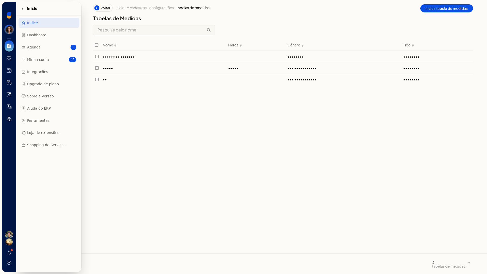
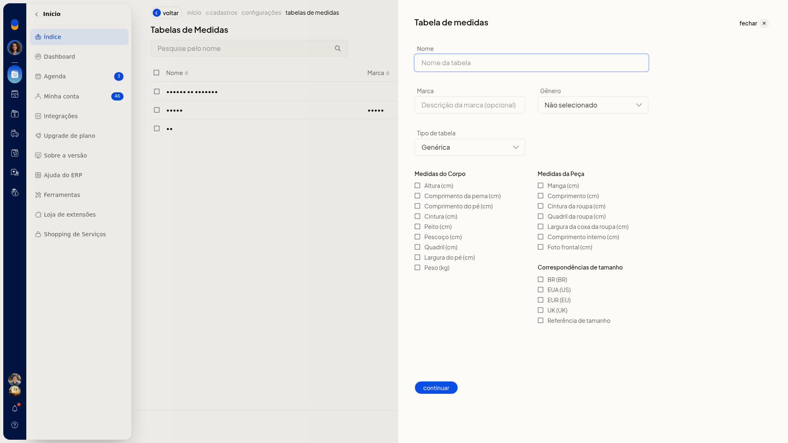
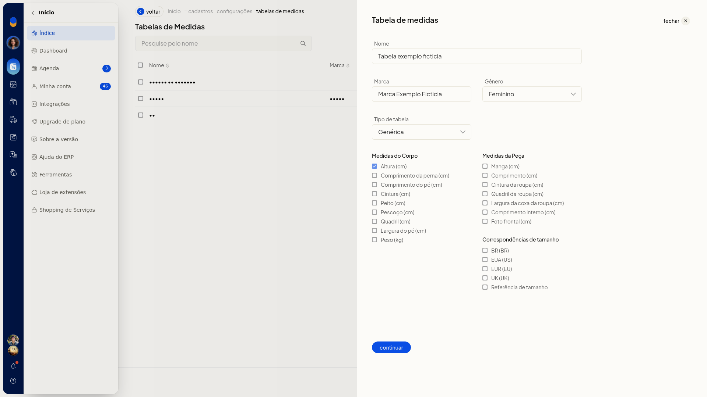
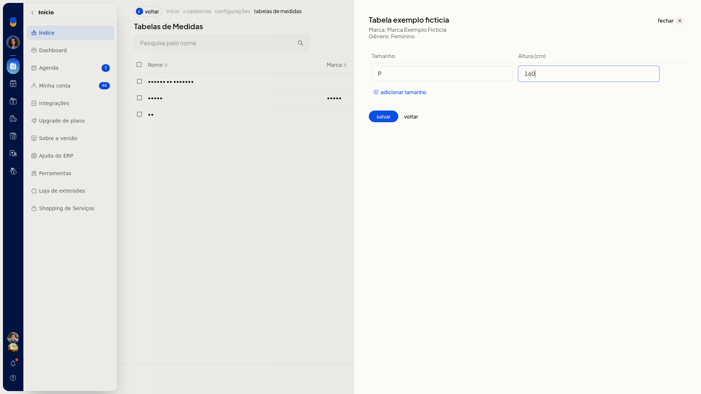
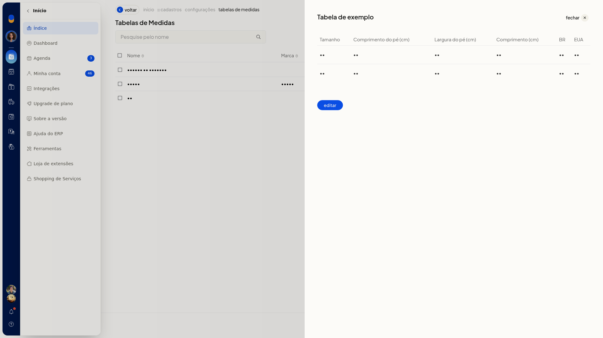
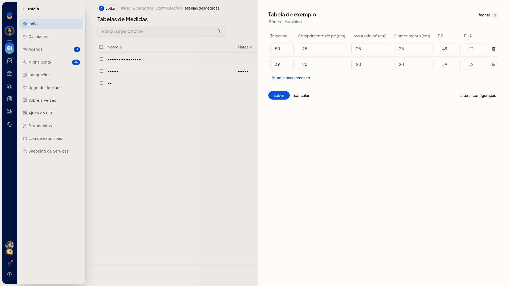

Tabelas de medidas
No ERP da Olist, a tabela de medidas guarda o gênero, o tipo e as medidas da grade de tamanhos. Você consulta, inclui e edita essas tabelas para usar no cadastro de produtos.
O recurso fica em Configurações > Cadastros > Tabelas de medidas.
Importante
- Continuar abre a grade de tamanhos e não grava a tabela.
- Fechar a inclusão devolve a lista sem gravar.
- Na edição, Cancelar devolve a visualização da tabela.
Instruções
- Acesse Configurações > Cadastros e abra Tabelas de medidas.

- Clique em Incluir Tabela de Medidas.

- Informe Nome. Se quiser, informe Marca. Em Gênero, selecione Não selecionado, Masculino, Feminino, Meninos ou Meninas. Em Tipo, selecione Genérica, Moda - Medidas da peça, Moda - Medidas do corpo ou Moda - Medidas combinadas.
- Marque as medidas que entram na tabela: Altura (cm), Comprimento da perna (cm), Comprimento do pé (cm), Cintura (cm), Peito (cm), Pescoço (cm), Quadril (cm), Largura do pé (cm), Peso (kg), Manga (cm), Comprimento (cm), Cintura da roupa (cm), Quadril da roupa (cm), Largura da coxa da roupa (cm), Comprimento interno (cm), Foto frontal (cm), BR (BR), EUA (US), EUR (EU), UK (UK) e Referência de tamanho.

- Clique em Continuar.
- Informe Tamanho e o valor de cada medida marcada. Para incluir outra linha, clique em Adicionar tamanho.

- Clique em Salvar para gravar a tabela.
Informações adicionais
A lista mostra nome, marca, gênero e tipo
A pesquisa é pelo nome. As colunas são Nome, Marca, Gênero e Tipo.
Uma tabela já cadastrada abre a grade
Abra a tabela na lista para ver a grade e clique em Editar. A edição tem Alterar configuração, Adicionar tamanho, Salvar e Cancelar.

